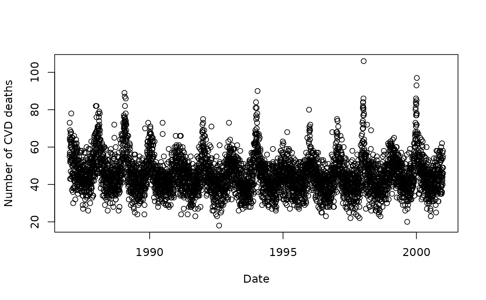

Daily number of deaths from cardiovascular disease in people aged 75 and over in Los Angeles for the years 1987 to 2000.
Format
A data frame with 5114 observations on the following 16 variables:
date: date of death in date format (year-month-day)
cvd: daily number of CVD deaths
dow: day of the week (character)
tmpd: daily mean temperature (degrees Fahrenheit)
o3mean: daily mean ozone (parts per billion)
o3tmean: daily trimmed mean ozone (parts per billion)
Mon: indicator variable for Monday
Tue: indicator variable for Tuesday
Wed: indicator variable for Wednesday
Thu: indicator variable for Thursday
Fri: indicator variable for Friday
Sat: indicator variable for Saturday
month: month (integer from 1 to 12)
winter: indicator variable for winter
spring: indicator variable for spring
summer: indicator variable for summer
autumn: indicator variable for autumn
References
Samet JM, Dominici F, Zeger SL, Schwartz J, Dockery DW (2000). The National Morbidity, Mortality, and Air Pollution Study, Part I: Methods and Methodologic Issues. Research Report 94, Health Effects Institute, Cambridge MA.
Examples
# \donttest{
plot(
CVDdaily$date,
CVDdaily$cvd,
type = 'p',
xlab = 'Date',
ylab = 'Number of CVD deaths')

# }